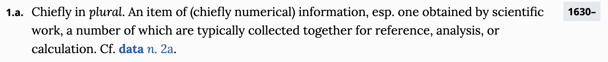

| species | island | bill_length_mm | bill_depth_mm | flipper_length_mm | body_mass_g | sex | year |
|---|---|---|---|---|---|---|---|
| Adelie | Torgersen | 39.1 | 18.7 | 181 | 3750 | male | 2007 |
| Adelie | Torgersen | 39.5 | 17.4 | 186 | 3800 | female | 2007 |
| Adelie | Torgersen | 40.3 | 18.0 | 195 | 3250 | female | 2007 |
| Adelie | Torgersen | NA | NA | NA | NA | NA | 2007 |
| Adelie | Torgersen | 36.7 | 19.3 | 193 | 3450 | female | 2007 |
| Adelie | Torgersen | 39.3 | 20.6 | 190 | 3650 | male | 2007 |
Data Wrangling
February 5 + 10, 2025
Jo Hardin
Agenda 2/5/25
- Tidy data
- Data verbs
What are data?
Tidy data
- each row = a unit of observation (here, a penguin)
- each column = a measure on some variable of interest, either quantitative (numbers with units) or categorical (discrete possibilities or categories)
- each entry contains a single data value; no analysis, summaries, footnotes, comments, etc, and only one value per cell
Definition of datum
The definition of datum can be much broader:
Definition of datum from the Oxford English Dictionary
Not tidy – Active Duty Military
The Active Duty data are not tidy! What are the cases? How are the data not tidy? What might the data look like in tidy form? Suppose that the case was “an individual in the armed forces.” What variables would you use to capture the information in the following table?

Tidying data
How would you wrangle each data example into a tidy format?
- the emails in your inbox
- social media texts
- images
- videos
- audio files
Tidy packages: the tidyverse

image credit: https://www.tidyverse.org/.
Verbs
Most data wrangling happens with a set of data verbs. Verbs are functions that act on data frames.
The first argument of each data verb is the data frame.
Some Basic Verbs
filter()arrange()select()distinct()mutate()summarize()sample_n()
(out of) NYC, flights data (2013)
# A tibble: 336,776 × 19
year month day dep_time sched_dep_time dep_delay arr_time sched_arr_time
<int> <int> <int> <int> <int> <dbl> <int> <int>
1 2013 1 1 517 515 2 830 819
2 2013 1 1 533 529 4 850 830
3 2013 1 1 542 540 2 923 850
4 2013 1 1 544 545 -1 1004 1022
5 2013 1 1 554 600 -6 812 837
6 2013 1 1 554 558 -4 740 728
7 2013 1 1 555 600 -5 913 854
8 2013 1 1 557 600 -3 709 723
9 2013 1 1 557 600 -3 838 846
10 2013 1 1 558 600 -2 753 745
# ℹ 336,766 more rows
# ℹ 11 more variables: arr_delay <dbl>, carrier <chr>, flight <int>,
# tailnum <chr>, origin <chr>, dest <chr>, air_time <dbl>, distance <dbl>,
# hour <dbl>, minute <dbl>, time_hour <dttm>filter()
Allows you to select a subset of the rows of a data frame. The first argument is the name of the data frame, the following arguments are the filters that you’d like to apply
For all flights on January 1st:
# A tibble: 842 × 19
year month day dep_time sched_dep_time dep_delay arr_time sched_arr_time
<int> <int> <int> <int> <int> <dbl> <int> <int>
1 2013 1 1 517 515 2 830 819
2 2013 1 1 533 529 4 850 830
3 2013 1 1 542 540 2 923 850
4 2013 1 1 544 545 -1 1004 1022
5 2013 1 1 554 600 -6 812 837
6 2013 1 1 554 558 -4 740 728
7 2013 1 1 555 600 -5 913 854
8 2013 1 1 557 600 -3 709 723
9 2013 1 1 557 600 -3 838 846
10 2013 1 1 558 600 -2 753 745
# ℹ 832 more rows
# ℹ 11 more variables: arr_delay <dbl>, carrier <chr>, flight <int>,
# tailnum <chr>, origin <chr>, dest <chr>, air_time <dbl>, distance <dbl>,
# hour <dbl>, minute <dbl>, time_hour <dttm>Constructing filters
Filters are constructed of logical operators: <, >, <=, >=, ==, != (and some others).
Adding them one by one to filter() is akin to saying “this AND that”. To say “this OR that OR both”, use |.
# A tibble: 51,955 × 19
year month day dep_time sched_dep_time dep_delay arr_time sched_arr_time
<int> <int> <int> <int> <int> <dbl> <int> <int>
1 2013 1 1 517 515 2 830 819
2 2013 1 1 533 529 4 850 830
3 2013 1 1 542 540 2 923 850
4 2013 1 1 544 545 -1 1004 1022
5 2013 1 1 554 600 -6 812 837
6 2013 1 1 554 558 -4 740 728
7 2013 1 1 555 600 -5 913 854
8 2013 1 1 557 600 -3 709 723
9 2013 1 1 557 600 -3 838 846
10 2013 1 1 558 600 -2 753 745
# ℹ 51,945 more rows
# ℹ 11 more variables: arr_delay <dbl>, carrier <chr>, flight <int>,
# tailnum <chr>, origin <chr>, dest <chr>, air_time <dbl>, distance <dbl>,
# hour <dbl>, minute <dbl>, time_hour <dttm>Practice
Construct filters to isolate:
- Flights that left on St. Patrick’s Day.
- Flights that were destined for Chicago’s primary airport.
- Flights that were destined for Chicago’s primary airport and were operated by United Airlines.
- Flights with flight times more than 2000 miles or that were in the air more than 5 hours.
Solution
- Flights that left on St. Patrick’s Day.
- Flights that were destined for Chicago’s primary airport.
- Flights that were destined for Chicago’s primary airport and were operated by United Airlines.
- Flights with flight times more than 2000 miles or that were in the air more than 5 hours.
arrange()
arrange() reorders the rows: It takes a data frame, and a set of column names (or more complicated expressions) to order by. If you provide more than one column name, each additional column will be used to break ties in the values of preceding columns:
# A tibble: 336,776 × 19
year month day dep_time sched_dep_time dep_delay arr_time sched_arr_time
<int> <int> <int> <int> <int> <dbl> <int> <int>
1 2013 1 1 517 515 2 830 819
2 2013 1 1 533 529 4 850 830
3 2013 1 1 542 540 2 923 850
4 2013 1 1 544 545 -1 1004 1022
5 2013 1 1 554 600 -6 812 837
6 2013 1 1 554 558 -4 740 728
7 2013 1 1 555 600 -5 913 854
8 2013 1 1 557 600 -3 709 723
9 2013 1 1 557 600 -3 838 846
10 2013 1 1 558 600 -2 753 745
# ℹ 336,766 more rows
# ℹ 11 more variables: arr_delay <dbl>, carrier <chr>, flight <int>,
# tailnum <chr>, origin <chr>, dest <chr>, air_time <dbl>, distance <dbl>,
# hour <dbl>, minute <dbl>, time_hour <dttm>Use desc() to sort in descending order.
# A tibble: 336,776 × 19
year month day dep_time sched_dep_time dep_delay arr_time sched_arr_time
<int> <int> <int> <int> <int> <dbl> <int> <int>
1 2013 1 9 641 900 1301 1242 1530
2 2013 6 15 1432 1935 1137 1607 2120
3 2013 1 10 1121 1635 1126 1239 1810
4 2013 9 20 1139 1845 1014 1457 2210
5 2013 7 22 845 1600 1005 1044 1815
6 2013 4 10 1100 1900 960 1342 2211
7 2013 3 17 2321 810 911 135 1020
8 2013 7 22 2257 759 898 121 1026
9 2013 12 5 756 1700 896 1058 2020
10 2013 5 3 1133 2055 878 1250 2215
# ℹ 336,766 more rows
# ℹ 11 more variables: arr_delay <dbl>, carrier <chr>, flight <int>,
# tailnum <chr>, origin <chr>, dest <chr>, air_time <dbl>, distance <dbl>,
# hour <dbl>, minute <dbl>, time_hour <dttm>select()
Often you work with large datasets with many columns where only a few are actually of interest to you. select() allows you to rapidly zoom in on a useful subset using operations that usually only work on numeric variable positions:
# A tibble: 336,776 × 3
year month day
<int> <int> <int>
1 2013 1 1
2 2013 1 1
3 2013 1 1
4 2013 1 1
5 2013 1 1
6 2013 1 1
7 2013 1 1
8 2013 1 1
9 2013 1 1
10 2013 1 1
# ℹ 336,766 more rowsYou can exclude columns using - and specify a range using :.
# A tibble: 336,776 × 16
dep_time sched_dep_time dep_delay arr_time sched_arr_time arr_delay carrier
<int> <int> <dbl> <int> <int> <dbl> <chr>
1 517 515 2 830 819 11 UA
2 533 529 4 850 830 20 UA
3 542 540 2 923 850 33 AA
4 544 545 -1 1004 1022 -18 B6
5 554 600 -6 812 837 -25 DL
6 554 558 -4 740 728 12 UA
7 555 600 -5 913 854 19 B6
8 557 600 -3 709 723 -14 EV
9 557 600 -3 838 846 -8 B6
10 558 600 -2 753 745 8 AA
# ℹ 336,766 more rows
# ℹ 9 more variables: flight <int>, tailnum <chr>, origin <chr>, dest <chr>,
# air_time <dbl>, distance <dbl>, hour <dbl>, minute <dbl>, time_hour <dttm>distinct()
A common use of select() is to find out which values a set of variables takes. This is particularly useful in conjunction with the distinct() verb which only returns the unique values in a table.
What do the following data correspond to?
mutate()
As well as selecting from the set of existing columns, it’s often useful to add new columns that are functions of existing columns. This is the job of mutate():
# A tibble: 336,776 × 4
flight dep_delay arr_delay gain
<int> <dbl> <dbl> <dbl>
1 1545 2 11 -9
2 1714 4 20 -16
3 1141 2 33 -31
4 725 -1 -18 17
5 461 -6 -25 19
6 1696 -4 12 -16
7 507 -5 19 -24
8 5708 -3 -14 11
9 79 -3 -8 5
10 301 -2 8 -10
# ℹ 336,766 more rowssummarize() and sample_n()
summarize() collapses a data frame to a single row based on some function. It’s not very useful yet, but it will be.
sample_n() provides you with a random sample of rows.
# A tibble: 1 × 1
delay
<dbl>
1 12.6# A tibble: 10 × 19
year month day dep_time sched_dep_time dep_delay arr_time sched_arr_time
<int> <int> <int> <int> <int> <dbl> <int> <int>
1 2013 12 20 1033 1015 18 1212 1150
2 2013 8 16 734 740 -6 902 914
3 2013 2 8 1131 1129 2 1314 1305
4 2013 8 27 1701 1659 2 1931 2006
5 2013 4 8 1729 1729 0 2108 2105
6 2013 10 16 624 630 -6 747 753
7 2013 2 11 1136 1114 22 1406 1345
8 2013 3 2 1357 1400 -3 1640 1631
9 2013 8 19 1442 1445 -3 1557 1642
10 2013 9 16 920 745 95 1146 1024
# ℹ 11 more variables: arr_delay <dbl>, carrier <chr>, flight <int>,
# tailnum <chr>, origin <chr>, dest <chr>, air_time <dbl>, distance <dbl>,
# hour <dbl>, minute <dbl>, time_hour <dttm>Practice
Mutate the data to create a new column that contains the average speed traveled by the plane for each flight.
Select the new variable and save it, along with tailnum, as a new data frame object.
Practice
Mutate the data to create a new column that contains the average speed traveled by the plane for each flight.
Select the new variable and save it, along with tailnum, as a new data frame object.
group_by()
summarize() and sample_n() are even more powerful when combined with the idea of “group by”, repeating the operation separately on groups of observations within the dataset.
The group_by() function describes how to break a dataset down into groups of rows.
group_by()
Find the fastest airplanes in the bunch, measured as the average speed per airplane.
by_tailnum <- group_by(speed_data, tailnum)
avg_speed <- summarize(by_tailnum,
count = n(),
avg_speed = mean(speed, na.rm = TRUE))
arrange(avg_speed, desc(avg_speed))# A tibble: 4,044 × 3
tailnum count avg_speed
<chr> <int> <dbl>
1 N228UA 1 501.
2 N315AS 1 499.
3 N654UA 1 499.
4 N819AW 1 490.
5 N382HA 26 486.
6 N388HA 36 484.
7 N391HA 21 484.
8 N777UA 1 483.
9 N385HA 28 483.
10 N392HA 13 482.
# ℹ 4,034 more rowsChaining
Instead of applying each verb step-by-step, we can chain them into a single data pipeline, connected with the |> operator. You start the pipeline with a data frame and then pass it to each function in turn.
The pipe syntax (|>) takes a data frame and sends it to the argument of a function. The mapping goes to the first available argument in the function. For example:
x |> f() is the same as f(x)
x |> f(y) is the same as f(x, y)
Mornings
Mornings
Morning
(better??)
Mornings
Little Bunny Foo Foo
From Hadley Wickham, how to think about tidy data.
Little bunny Foo Foo
Went hopping through the forest
Scooping up the field mice
And bopping them on the head
Little Bunny Foo Foo
The nursery rhyme could be created by a series of steps where the output from each step is saved as an object along the way.
Little Bunny Foo Foo
Another approach is to concatenate the functions so that there is only one output.
Little Bunny Foo Foo
Or even worse, as one line:
Little Bunny Foo Foo
Instead, the code can be written using the pipe in the order in which the function is evaluated:
Flights
flights2 <- mutate(flights, speed = distance/(air_time/60))
tail_speed <- select(flights2, tailnum, speed)
tail_speed_grp <- group_by(tail_speed, tailnum)
tail_ave <- summarize(tail_speed_grp, number = n(),
avg_speed = mean(speed, na.rm = TRUE))
arrange(tail_ave, desc(avg_speed))# A tibble: 4,044 × 3
tailnum number avg_speed
<chr> <int> <dbl>
1 N228UA 1 501.
2 N315AS 1 499.
3 N654UA 1 499.
4 N819AW 1 490.
5 N382HA 26 486.
6 N388HA 36 484.
7 N391HA 21 484.
8 N777UA 1 483.
9 N385HA 28 483.
10 N392HA 13 482.
# ℹ 4,034 more rowsflights |>
mutate(speed = distance / (air_time/60)) |>
select(tailnum, speed) |>
group_by(tailnum) |>
summarize(number = n(),
avg_speed = mean(speed, na.rm = TRUE)) |>
arrange(desc(avg_speed))# A tibble: 4,044 × 3
tailnum number avg_speed
<chr> <int> <dbl>
1 N228UA 1 501.
2 N315AS 1 499.
3 N654UA 1 499.
4 N819AW 1 490.
5 N382HA 26 486.
6 N388HA 36 484.
7 N391HA 21 484.
8 N777UA 1 483.
9 N385HA 28 483.
10 N392HA 13 482.
# ℹ 4,034 more rowsPractice
Form a chain that creates a data frame containing only carrier and the mean departure delay time. Which carriers have the highest and lowest mean delays?
Practice
Form a chain that creates a data frame containing only carrier and the mean departure delay time. Which carriers have the highest and lowest mean delays?
flights |>
group_by(carrier) |>
summarize(avg_delay = mean(dep_delay, na.rm = TRUE)) |>
arrange(desc(avg_delay))# A tibble: 16 × 2
carrier avg_delay
<chr> <dbl>
1 F9 20.2
2 EV 20.0
3 YV 19.0
4 FL 18.7
5 WN 17.7
6 9E 16.7
7 B6 13.0
8 VX 12.9
9 OO 12.6
10 UA 12.1
11 MQ 10.6
12 DL 9.26
13 AA 8.59
14 AS 5.80
15 HA 4.90
16 US 3.78Practice again
Say you’re curious about the relationship between the number of flights that each plane made in 2013, the mean distance that each of those planes flew, and the mean arrival delay. You also want to exclude the edge cases from your analysis, so focus on the planes that have logged more than 20 flights and flown an average distance of less than 2000 miles. Please form the chain that creates this dataset.